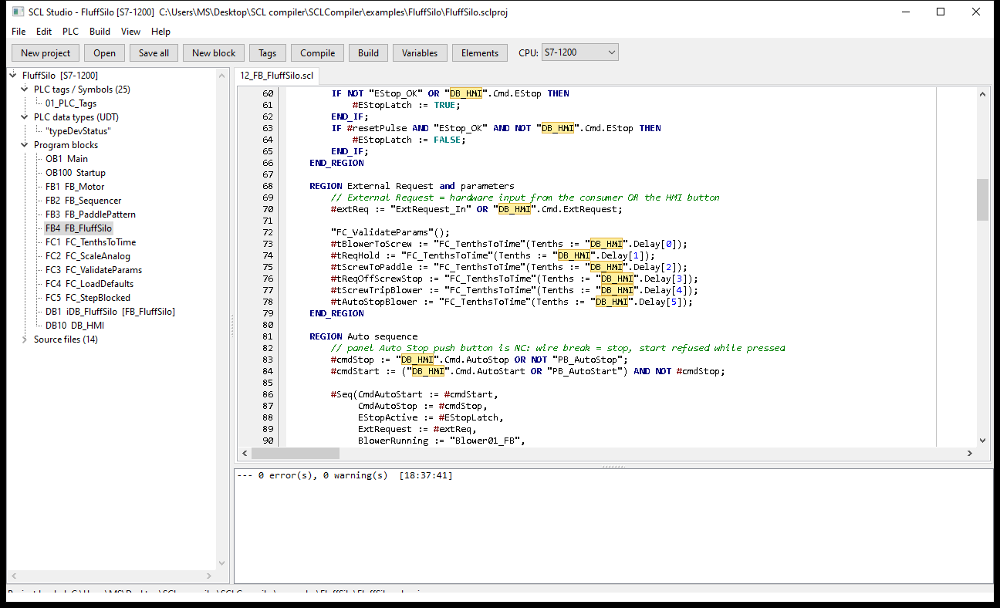
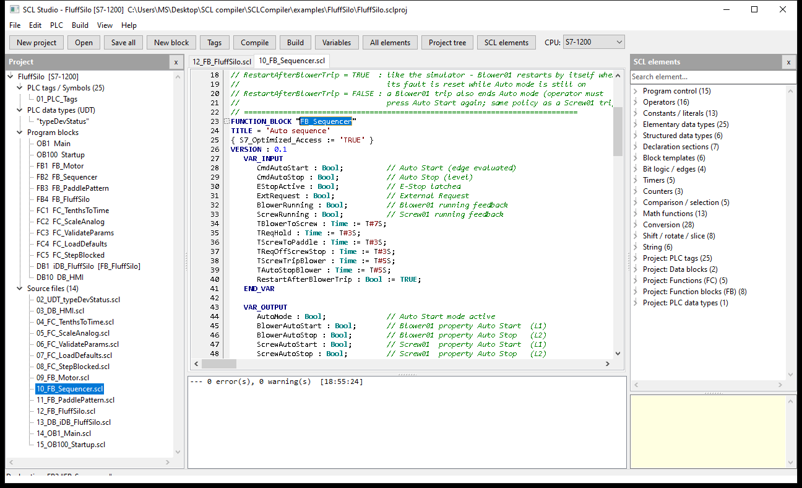
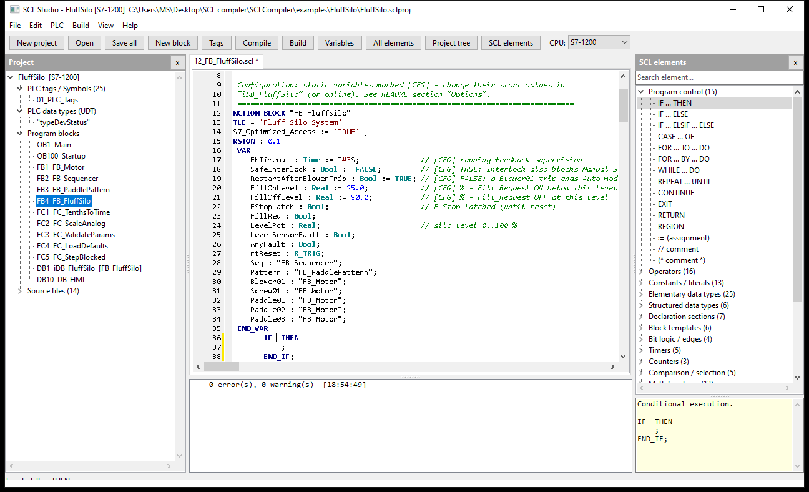
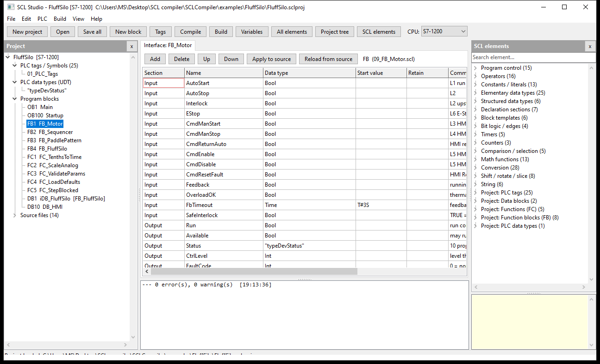
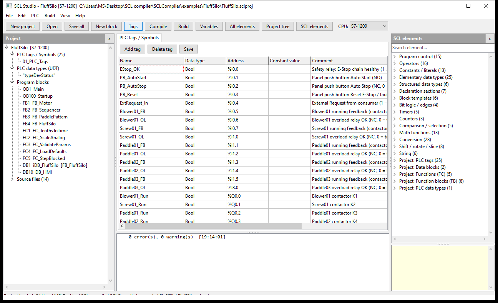
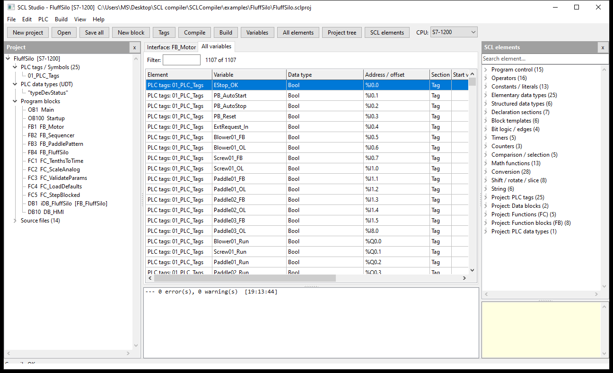
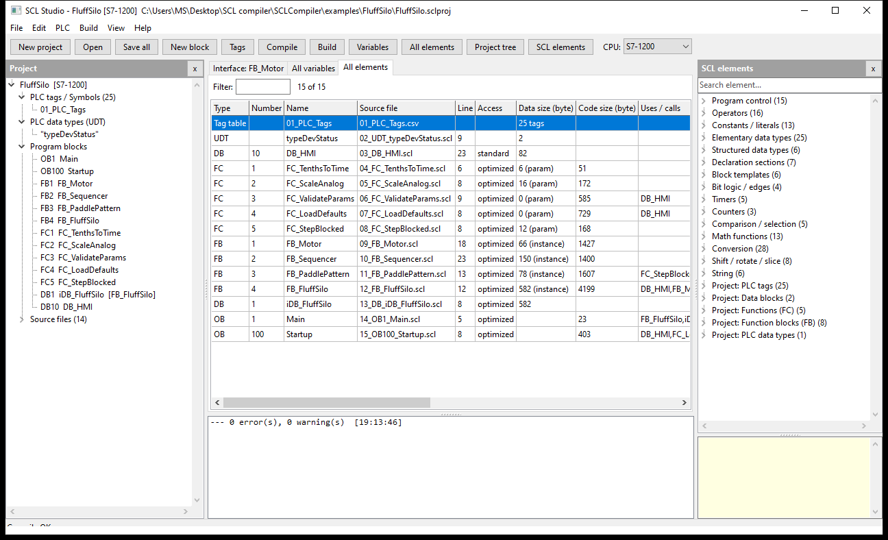
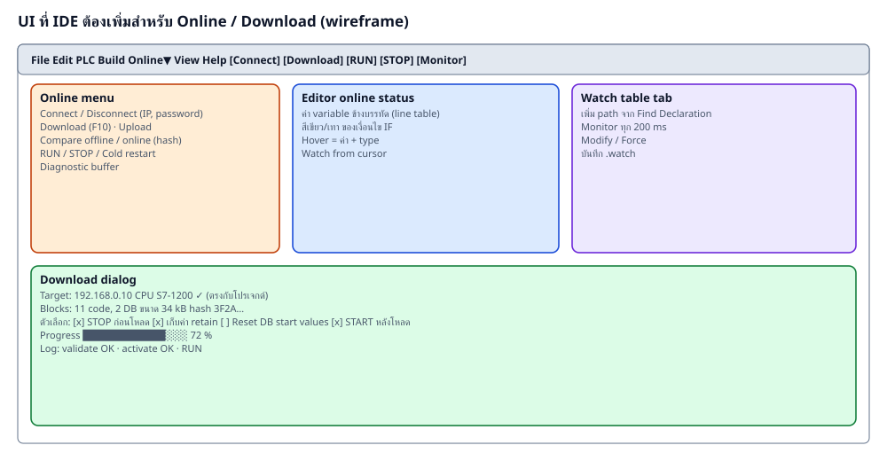
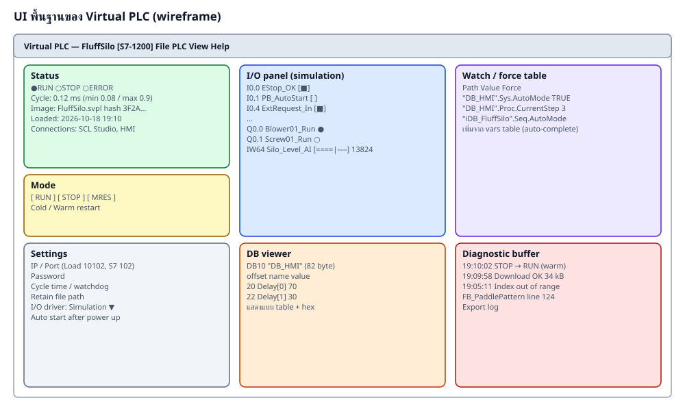

| ส่วน UI | ความสามารถ |
|---|---|
| Toolbar | New project, Open, Save all, New block, Tags, Compile, Build, Variables, All elements, Project tree, SCL elements, CPU |
| Project tree (Alt+1) | PLC tags, UDT, Program blocks (OB/FB/FC/DB พร้อมเลข), Source files; context menu: open, interface, set number, remove |
| SCL editor | syntax highlight, auto highlight ชื่อ, Find Declaration (คลิกขวา / Alt+Up / Ctrl+Click), Go Back (Alt+Left), Find, Undo/Redo |
| SCL elements (Alt+2) | 20 หมวด พับ/ขยาย ค้นหา ลากวาง / ดับเบิลคลิก, หมวด Project อัปเดตตาม compile |
| Messages | error/warning ดับเบิลคลิกไปบรรทัด |
| Views | All variables, All elements, Listing, Tags, Interface grid |
| File | Recent projects / Recent files, import tags, add source |

| ลำดับความสำคัญ | UI | รายละเอียด |
|---|---|---|
| สูง | Online menu + toolbar | Connect/Disconnect, Download (F10), RUN, STOP, สถานะการเชื่อมต่อใน status bar |
| สูง | Connection settings | IP, port, password, timeout; จำค่าไว้ในโปรเจกต์ |
| สูง | Download dialog | เทียบ CPU/hash, ตัวเลือก STOP ก่อนโหลด / keep retain / reset DB / START หลังโหลด, progress, log |
| สูง | Diagnostic buffer viewer | แสดงเหตุการณ์จาก Virtual PLC, ดับเบิลคลิกไป block/line |
| กลาง | Watch / force table | เพิ่ม path จาก All variables / Find Declaration, monitor ทุก 200 ms, modify, force |
| กลาง | Online status ใน editor | แสดงค่าตัวแปรข้างบรรทัดตาม line table, สีของเงื่อนไข |
| กลาง | Compare offline/online | hash ทั้งไฟล์และต่อ block |
| ต่ำ | Upload | ดึง image จาก Virtual PLC (ดูได้แต่ไม่มี source) |

| ส่วน | ต้องมี |
|---|---|
| Status | RUN / STOP / ERROR LED, cycle time min/avg/max, ชื่อ image, hash, เวลาที่โหลด, จำนวน connection |
| Mode | ปุ่ม RUN / STOP / MRES, cold / warm restart, auto start เมื่อเปิดโปรแกรม |
| I/O panel | checkbox ของ input (จาก TAGS), lamp ของ output, slider ของ analog — ใช้ทดสอบเมื่อไม่มี hardware |
| Watch / force | ตารางตัวแปรตาม path พร้อมค่า และ force |
| DB viewer | ดู DB เป็นตาราง (จาก vars) และ hex |
| Diagnostic buffer | ประวัติเหตุการณ์ export ได้ |
| Settings | port, password, cycle/watchdog, retain path, I/O driver, S7 server on/off |